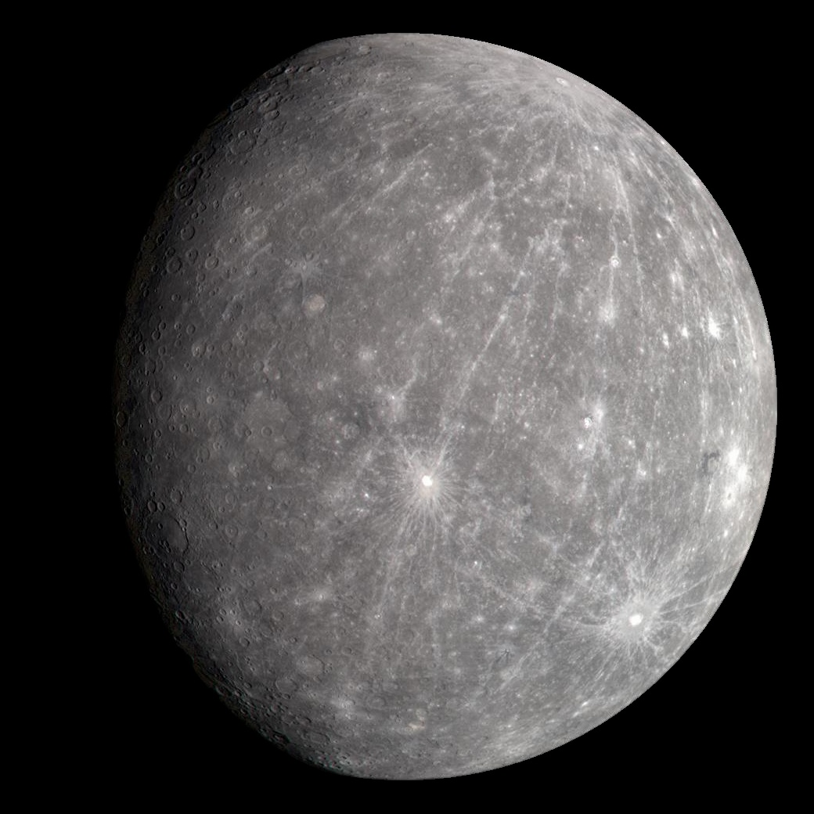

Terrestrial Planet · 0.39 AU from the Sun
The smallest planet and the fastest — completing a year in just 88 days. Scorched to 430°C in the day, plunging to −180°C at night. A world that defies every expectation.

Quick Facts
Mercury is a planet of superlatives and surprises. It's the smallest planet, the closest to the Sun, and the fastest orbiting. It has the most eccentric orbit of any planet and the most extreme daily temperature swings in the solar system. It has almost no atmosphere, no moons, and no rings. By most definitions it should be one of the most straightforward worlds to understand — and yet Mercury has consistently defied our expectations at every turn.
Temperature & Orbit
Mercury's temperature swings are the most dramatic of any planet in the solar system — and understanding why tells you something fundamental about atmospheres. On Earth, our atmosphere acts like a blanket, absorbing heat during the day and releasing it slowly at night, keeping temperatures relatively stable. Mercury has almost no atmosphere to speak of — just a wispy exosphere of atoms kicked off the surface by solar wind and meteorite impacts. So when the Sun blazes down, temperatures soar to around 430°C. Then night falls, and with no atmospheric blanket to hold the warmth in, temperatures plummet to around -180°C. That's a swing of over 600 degrees between day and night on the same planet.
Mercury's orbit is also one of the strangest in the solar system. It's highly elliptical — more oval-shaped than any other planet — meaning the distance between Mercury and the Sun changes dramatically throughout the year. At its closest point (perihelion), Mercury is just 46 million kilometres from the Sun. At its furthest (aphelion), it stretches to 70 million kilometres. That means from the surface of Mercury, the Sun would appear to change size noticeably over the course of a single orbit.
Here's one of Mercury's strangest quirks: a day on Mercury lasts longer than a year. One full rotation takes about 59 Earth days, but Mercury orbits the Sun in only 88 Earth days. Because of this 3:2 spin-orbit resonance, there are places on Mercury's surface where the Sun rises, moves slowly across the sky, briefly reverses direction, then continues forward — all before setting. If you stood on Mercury, you'd experience a sunrise that backs up before moving forward again.
Surface & Geology
At first glance, Mercury's surface looks a lot like our Moon — heavily cratered, ancient, and grey. Both are rocky worlds with surfaces shaped primarily by billions of years of meteorite impacts. But look more closely and Mercury reveals geology that's entirely its own.
The most striking features on Mercury are its lobate scarps — long, winding cliff faces that stretch for hundreds of kilometres across the surface, sometimes cutting right through craters. These formed as Mercury's interior slowly cooled and contracted over billions of years, causing the crust to buckle and fold like the skin of a shrinking apple. Scientists estimate Mercury has shrunk in diameter by as much as 7 kilometres since it formed — significant on a planet just 4,879 kilometres across.
The most dramatic impact feature on Mercury is the Caloris Basin — one of the largest impact craters in the entire solar system at roughly 1,550 kilometres wide. The collision that created it was so violent that shockwaves travelled all the way around the planet and converged on the opposite side, creating a chaotic region of fractured terrain called the Weird Terrain. It's a visible scar from a collision that would have been catastrophic beyond imagination.
Mercury wasn't always just a battered, dead world. Evidence from MESSENGER showed extensive smooth plains covering large parts of the surface — remnants of ancient volcanic eruptions that flooded low-lying areas with lava billions of years ago. Some of these plains are younger than Caloris Basin itself, suggesting Mercury had an active volcanic history well after its formation. Whether any volcanism persists today remains an open question.
Interior Structure
Mercury's interior is one of the great unsolved puzzles in planetary science. The iron core makes up roughly 85% of the planet's radius and about 60–70% of its total mass — the largest core by proportion of any planet in the solar system. If you could strip away Mercury's rocky mantle and crust, you'd be left with a core roughly the same size as our Moon.
Why is Mercury's core so disproportionately large? The leading hypothesis involves a giant impact early in the solar system's history — a massive collision that stripped away much of Mercury's rocky outer layers, leaving the dense iron core dominant. Another possibility is that the intense heat of the early Sun evaporated Mercury's lighter rocky material. Neither explanation is fully settled, and BepiColombo's measurements may finally resolve the debate.
Despite being so small and so close to the Sun, Mercury generates its own magnetic field — something only Earth does among the rocky planets. Mercury's field is about 1% the strength of Earth's, but it's real, and it creates a small magnetosphere that deflects some of the solar wind. The fact that such a small, slowly rotating planet has any magnetic field at all suggests its iron core is at least partially molten — which is itself surprising given how long Mercury has had to cool down.
Polar Craters
Here's something that seems impossible: water ice on the planet closest to the Sun. And yet, it's there. Mercury's axis is tilted by less than one degree — nearly perfectly upright. The floors of craters near the poles are in permanent shadow, never receiving direct sunlight, and temperatures in those frozen shadows can drop to around -200°C — cold enough to preserve water ice for billions of years.
Radar observations from Earth first detected highly reflective patches at Mercury's poles in the early 1990s. MESSENGER confirmed it: water ice and frozen volatile compounds are preserved in permanently shadowed polar craters, covered in places by a thin layer of dark organic material that acts as insulation. Some of these ice deposits may be hundreds of metres thick. The water was most likely delivered by comets and asteroids over billions of years — the same process thought to have brought water to early Earth.
The ice at Mercury's poles is one of the most counterintuitive discoveries in planetary science. It illustrates a principle astronomers encounter again and again: in the right conditions, even the most hostile environments can harbour stable reservoirs of water. The same logic applies to permanently shadowed craters on our Moon, and to the subsurface oceans of icy moons like Europa and Enceladus.
Space Missions
Getting to Mercury is surprisingly difficult. To reach it from Earth, a spacecraft has to shed an enormous amount of orbital energy to slow down enough to enter orbit rather than fly past. This typically requires multiple gravity-assist flybys of other planets, adding years to the journey. As a result, Mercury remains one of the least visited planets in the solar system despite being our neighbour.
The first spacecraft to visit Mercury, Mariner 10 performed three flybys between 1974 and 1975. It mapped about 45% of the surface, discovered Mercury's magnetic field — which was a complete surprise — and returned the first close-up images of the planet. For nearly three decades it remained the only mission to have visited Mercury.
MESSENGER became the first spacecraft to orbit Mercury in 2011, after a seven-year journey involving flybys of Earth, Venus, and Mercury itself. Over four years it mapped the entire surface, confirmed the polar ice deposits, measured the magnetic field in detail, and revealed Mercury's complex volcanic history. MESSENGER intentionally impacted Mercury's surface in 2015 when its fuel was exhausted.
The most ambitious Mercury mission ever attempted, BepiColombo is a joint ESA and JAXA mission launched in October 2018. It completed the last of its nine planetary flybys in January 2025 and is now on its final approach to Mercury, with orbit insertion scheduled for November 2026 — delayed by about a year from the original December 2025 target after a thruster issue in 2024 reduced ion engine output. Once in orbit, its two spacecraft will separate: the Mercury Planetary Orbiter will map the surface and study the interior, while the Japanese Mio orbiter will analyse the magnetic field and magnetosphere. Scientists hope BepiColombo will finally explain why Mercury's core is so disproportionately large.
Bigger Picture
Mercury's position in the solar system makes it a critical reference point for understanding how rocky planets form and evolve. It sits in the innermost orbit, where the young Sun's heat was most intense, and it bears the scars of a violently active early solar system. Its oversized core, shrunken crust, and ancient craters are a record of events that shaped every rocky planet — including Earth.
In about five billion years, the Sun will expand into a red giant and may engulf Mercury entirely. Long before that, Mercury's highly elliptical orbit will continue to evolve under the gravitational influence of Jupiter and the other planets. Simulations suggest there's a small but non-zero chance that over billions of years, Mercury's orbit could become destabilised enough to cause a collision with Venus or even the Sun — a reminder that the architecture of our solar system isn't permanent.
Every close look we get at Mercury challenges something we thought we understood about planetary science. Its unexpected magnetic field contradicts simple models of planetary cooling. Its polar ice sits on the most Sun-blasted planet in the solar system. Its giant core suggests a history of violence we're still piecing together. Mercury isn't just interesting as a destination — it's a key to understanding how all rocky worlds, including our own, came to be.
Explore the other worlds of our solar system, or launch the interactive Solar System to see Mercury's orbit in real time alongside all eight planets. For the full story of how we got here, visit the Solar System Guide.